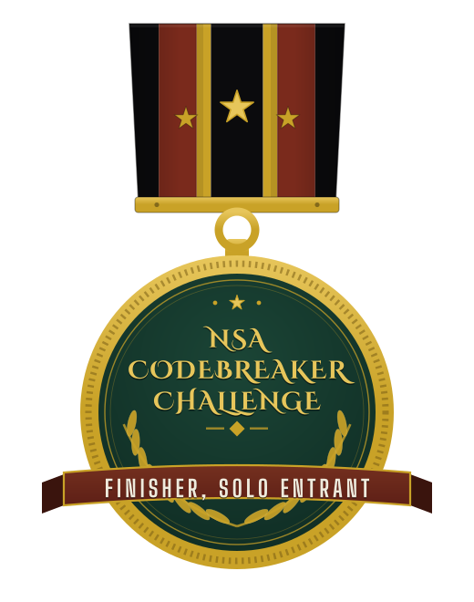
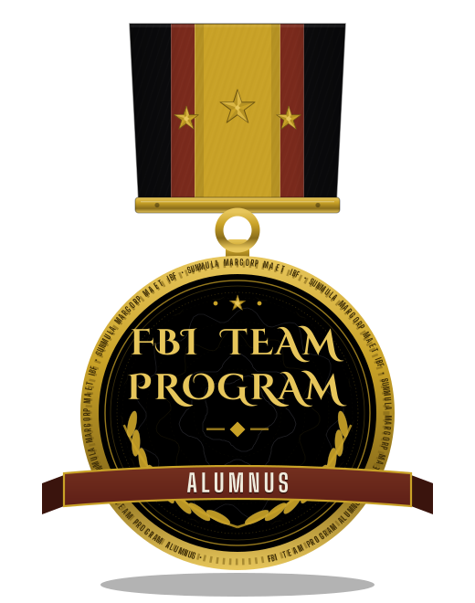
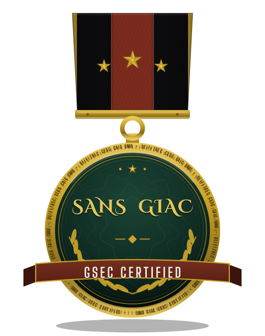
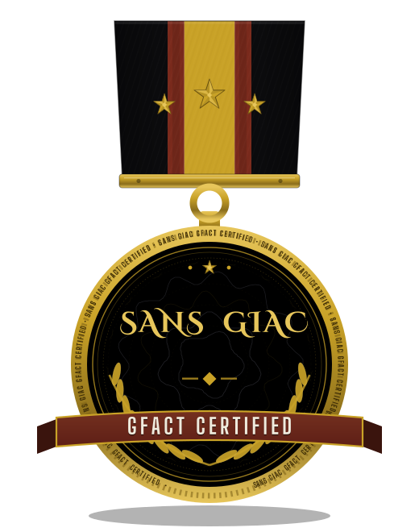
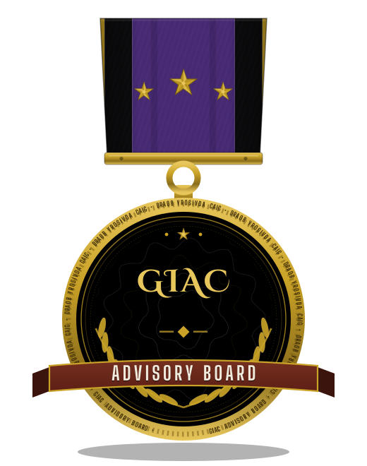
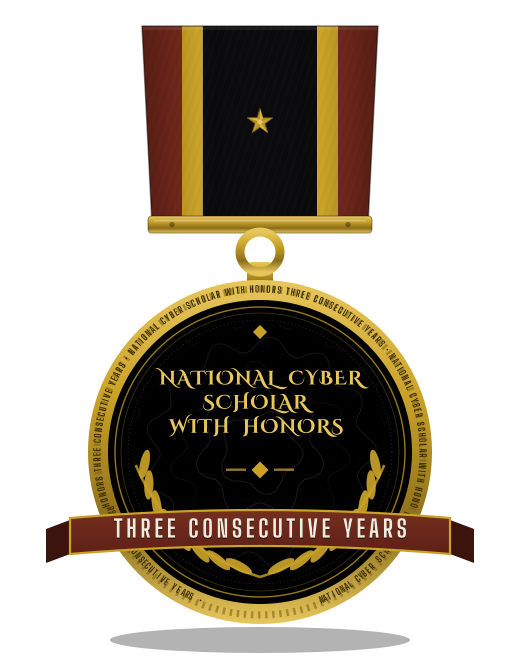
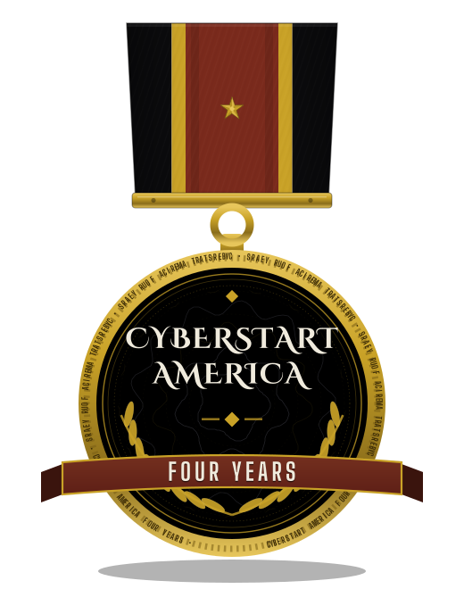
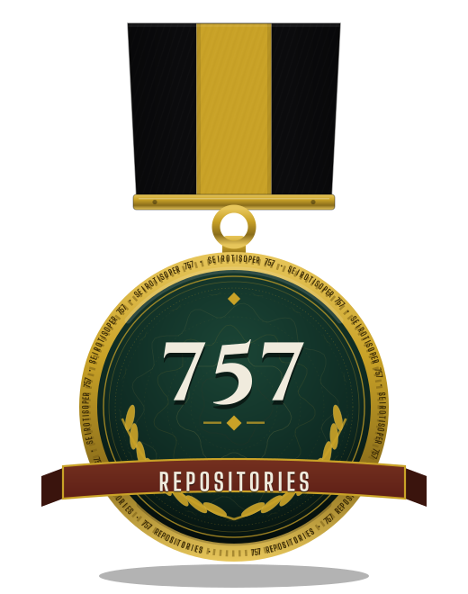

Shatterpoint Security is my practice in formation: the side of the work where research and tooling turn into reviews, audits, and straight answers for other people. It is being built the same way as everything else I run: on a public record, one verified piece at a time.
I am Gavin K. I publish as Epsilon0xCell. Everything on this page is part of a public record, and every claim on it can be checked.
The practice carries the same standard as the fleet behind it: 757 repositories of public work, audited and documented, standing behind every engagement it takes on as it forms.







